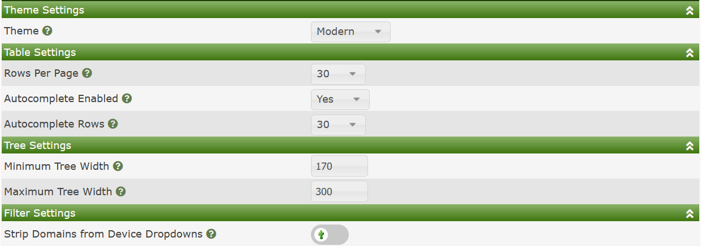
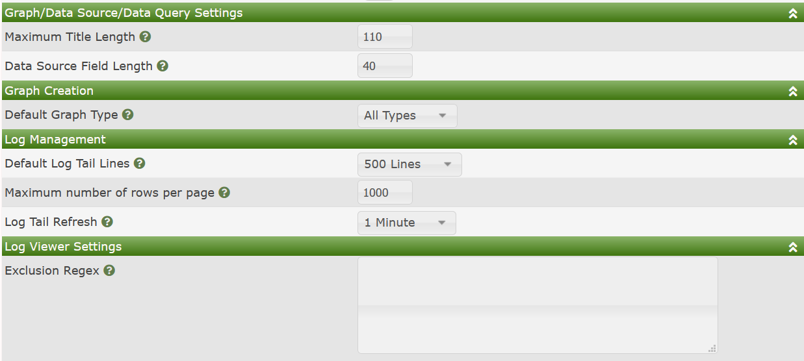
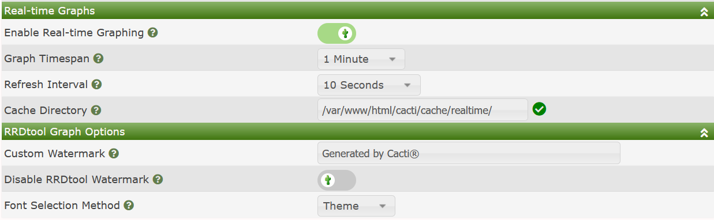
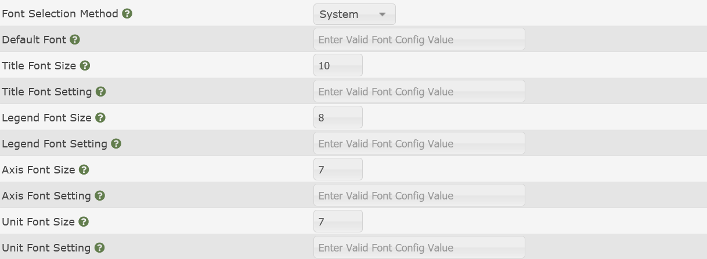

Cacti's Visual settings page is where you can go to globally control the behavior of Cacti's GUI. Settings like the default Theme, the maximum allowed size of a Graph Title, auto-complete settings, as well as a myriad of other settings can be found here.
The Visual page is broken down into several sub-sections. We will cover them and the meaning of the various settings here.
NOTE: This is a popular page for Plugin developers to augment. Therefore, if you have installed Plugins, your Settings page may look different than the default page.
The image below shows the default layout for these sub-sections.

Those settings include:
Theme - The default theme that users logging into Cacti receive
Rows Per Page - For all standard Cacti tables, the number of rows to show per page.
Auto-complete Enabled - Many drop-downs do not scale well with thousands of items. In those cases, Cacti has enabled a drop-down auto-complete feature most large installs should leverage it. However, if you are a small install you can choose to disable auto-complete.
Auto-complete Rows - The maximum rows to show in an auto-complete response.
Minimum Tree Width - The minimum width of the Tree panel in Cacti
Maximum Tree Width - The maximum width of the Tree panel in Cacti. Above this width, tree items will scroll into the panel.
Strip Domains from Device Drop-downs - Strip domain names from Device drop-downs to save horizontal filter space.
The image below shows the default layout for these sub-sections.

Those settings include:
Maximum Title Length - The maximum length of a Graph or Data Source title. Titles above this length will be clipped.
Data Source Field Length - When applying |query_*| replacement values, the maximum supported length of those variables. Variables longer than this will be clipped.
Default Graph Type - When on the New Graphs page, which Graph Type filter should be the default. With Device Templates with many Data Queries or Graph Templates, this page can become very long. Allowing you to select your preferred Graph Type makes navigating the page easier.
Default Log Tail Lines - When viewing the Cacti Log, how many lines should appear per page.
Maximum number of rows per page - The maximum number of regular expression search matches to display, when searching.
Log Tail Refresh - The frequency that the log pages should auto-refresh.
Exclusion Reg-ex - This setting allows you to exclude certain log messages by regular expression from normal users. Expressions that include login log entries are common here to mask the login accounts of users.
The image below shows the default layout for these sub-sections.

Those settings include:
Enable Real-time Graphing - Allow Realtime graphs to be used in Cacti.
Graph Time-span - The default system level Graph Timespan use use when a user opens a Realtime Graph for the first time.
Refresh Interval - The default system level Refresh Interval for the Realtime interface when a user first opens a Realtime Graph.
Cacti Directory - Where should Cacti cache Realtime PNG's and RRDfiles.
Custom Watermark - A watermark that will appear on every Cacti Graph
Disable RRDtool Watermark - Every RRDtool Graph includes a vertical watermark. This option allows you to disable that.
Font Selection Method - This allows the system administrator to control, at a global level, how various text elements on RRDtool Graphs appear. The settings include: Theme, or System. When choosing System, your settings page will expand where you will then have additional control.
NOTE: The RRDtool Watermark control requires a recent version of RRDtool, such as the 1.7 release. If you attempt to use this setting and your Graphs break, then upgrade RRDtool.
The image below shows the available Font Selection options when you override the Theme settings.

The sizes are in pixels, and the Font Settings can either be a True Type Font file path, or a valid Pango font-config value. For more information on Pango font-config values, see your operating systems documentation. However, you can normally see all the fonts installed on your Linux system by issuing the following command fc-list.
Copyright (c) 2004-2024 The Cacti Group